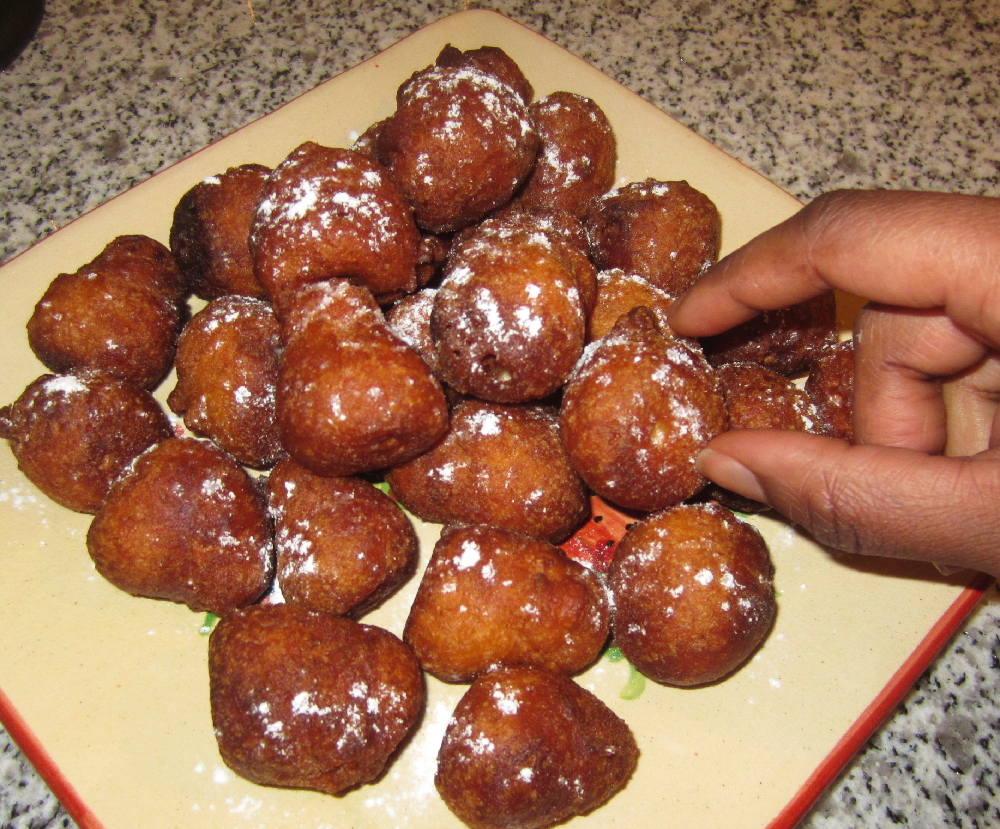
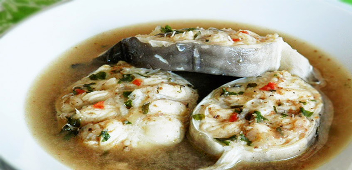
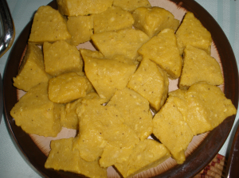

Breakfast
 In Equatorial Guinea, the usual breakfast taking has a huge diversity and varies depending on the social status, cultural background as well as area of residence. Although some people prefer to adopt the traditional western ways of breakfast, in Equatorial Guinea, there are still some people who prefer to stick to the traditional ways as you can see in the picture. This types of food are found in many other cultures but in Guinea they have a tipical and unique mode of preparation and taste. Most of these kind of tipical food are made of flour and some have sugar and others have other types of components considered as flavours. Apart of these, people also like to take some sausages with some bread. Milk is also comon in Equatorial Guinea, to the extend that some kinds would not consider have taken breakfast if they did not get milk.
Soups
 In Equatorial Guinea, the use of soups is more more usual than many part of the world. Every dish or almost everyone you take is basically made of soup and some other main food. You can also find some important soups made of palm oil, tomatoes stills are also hugly usual. Most of the soups are mainly made with vagetables, very healthy leaves and they do have some special flavours originally from the central part of Africa.Chicken served in a peanut butter sauce, rice cream or boiled bananas. Grilled meat or fish with ground pumpkin seeds served in leaves. Anyway, among these soups, since they are quite difficult to imagine for people who are not familiar with the culture of Equatorial Guinea and any other tropical countries, we will provide some videos, so that you get to understand better how they look like and how they are prepared.
Main dishes
 The main dishes in Equatorial Guinea like in almost all the African countries are really heavy. Which mean that they are mostly made of product like flour concentrated, casava, plantain (like in the picture), or the many different types of tuber that you can find like casava. It is important not to forget that Equatorial Guinean cityzens have ricece and one of most popular main for any type of meal, specilly those mentioned soups above. There are some main originally from Equatorial Guinea which are made of different vegetables or fruit. The Bioko Island resident have HABALA, in the Main Land, those who live close to the sea have Mewanda, and those far from the sea have Mbong, finally, those from the Annobon Island, have Pisohk. This are only the most famous among all of them, there are many more traditionla dishes that you can only find in Equatorial Guinea.